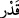

kibirlilik
taslamış
olmanızdan
ötürü,
bugün
alçaklık
azabı
ile
cezalandırılacaksınız!” derken onların halini bir görsen!
94. Andolsun ki, sizi ilk defa yarattığımız gibi teker teker bize geleceksiniz ve
(dünyada) size verdiğimiz şeyleri arkanızda bırakacaksınız. Yaratılışınızda
ortaklarımız sandığınız şefaatçılarınızı da yanınızda göremeyeceğiz. Andolsun,
aranız açılmış ve (tanrı) sandığınız şeyler sizden kaybolup gitmiştir.
Yahûdîler, “Allah’ı şanına yaraşır biçimde takdir edemediler.” Âyetteki “
” in
esas mânâsı, bir şeyi mikdarını öğrenmek için ölçüp tahmin etmektir. Bir şeyin miktarını
tahmin edip de kıymetini takdir edene: “Onu takdir etti, kıymetini bildi.” denir. Yine bir
şeyin miktarını, durumunu ya da evsâfını bilene de: “Onun değerini takdir etti” denir.
Yine bir şeyin özelliklerinden habersiz olana: “Onun kıymetini bilmedi.” denir.
Rivayet edilir ki, yahudilerin reislerinden ve bilginlerinden Malik bin Sayf,
beraberinde bir topluluk olduğu halde Rasûlullah (s.a.) ile tartı üzere Mekke’ye geldi.
Aklınca Rasûlullah’a bazı şeyler soracak, onu zorda bırakacaktı. Malik bin Sayf, şişman
bir adamdı. Mekke’ye Rasûlullah (a.s.)’ın yanına gelince Rasûllullah (s.a.) ona:
“Mûsâ’ya Tevrat’ı indiren aşkına söyle. Tevrat’da Allah’ın şişman hahamdan nefret
ettiği yazmıyor mu?” dedi.
O da: “Evet” dedi. Efendimiz: “Sen de şişman bir hahamsın. Yahudilerin sana
yedirdikleriyle semirdin, sen oruç da tutmazdın.” Bunun üzerine oradaki insanlar
gülüştüler. Malik bin Sayf ne yapacağını şaşırdı. Öfkelenerek şöyle dedi: “Allah, hiçbir
insana bir şey indirmedi!”
Malik kavminin yanına vardığında ona: “Sana yazıklar olsun. Senden bize ulaşan
haber ne kötü! Allah, Mûsâ’ya Tevrat’ı indirmedi mi? Niçin öyle söyledin?” dediler.
Malik şöyle dedi: “Muhammed beni kızdırdığı için böyle konuştum.” Bunun üzerine
insanlar ona: “Demek ki sen kızdığın zaman Allah hakkında gerçek olmayan şeyler
söyleyebiliyor ve dinini terkediyorsun.” dediler. Ondan hahamlık sıfatını da, başkanlık
vazifesini de geri aldılar ve Kâb b. Eşref’e verdiler. İşte bunun üzerine açıklamakta
olduğumuz âyet nâzil oldu.
Âyetin mânâsı şöyledir: “Hak Teâlâ’yı kullarına olan lütuf ve ihsanlarında,
yarattıklarına olan sonsuz merhameti hususunda gerektiği gibi tanıyamadılar. Bu konuda
O’nun hukukuna gereğince riayet etmediler. Bilakis Allah’ın haklarını ihlâl ettiler.”
Âyette marifet (tanımak, bilmek), “kadr” takdir etmek diye ifade edilmiştir. Çünkü
takdir etmek, tanımaya vesile olur ve insanı ona götürür.
“Zîrâ”, peygamberler gönderilmesini, kitaplar indirilmesini ve apaçık nimetlerini